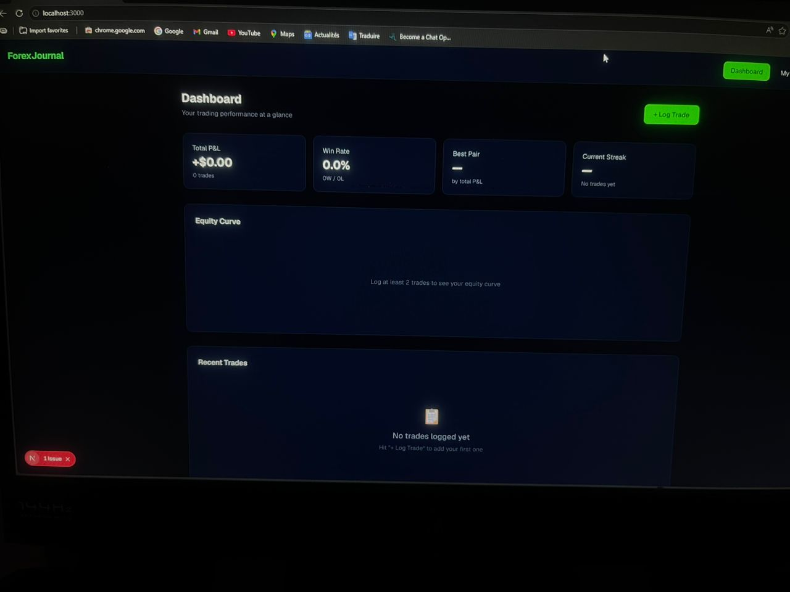
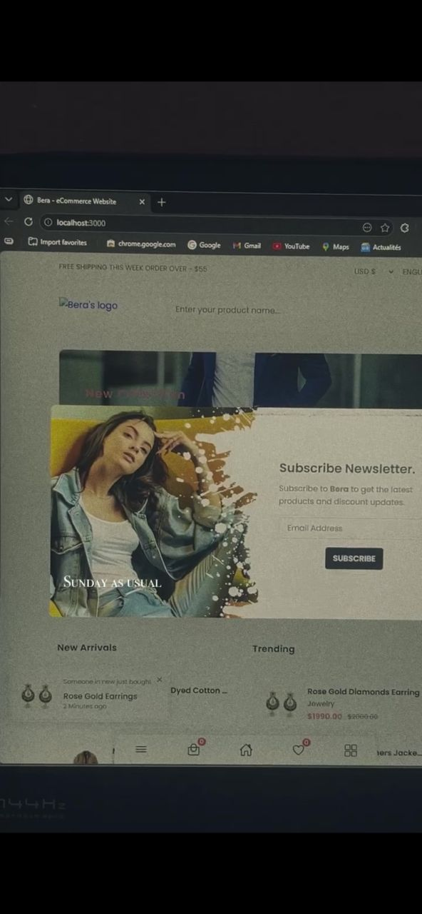
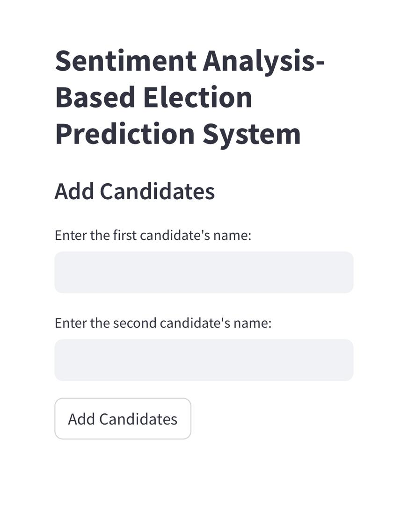
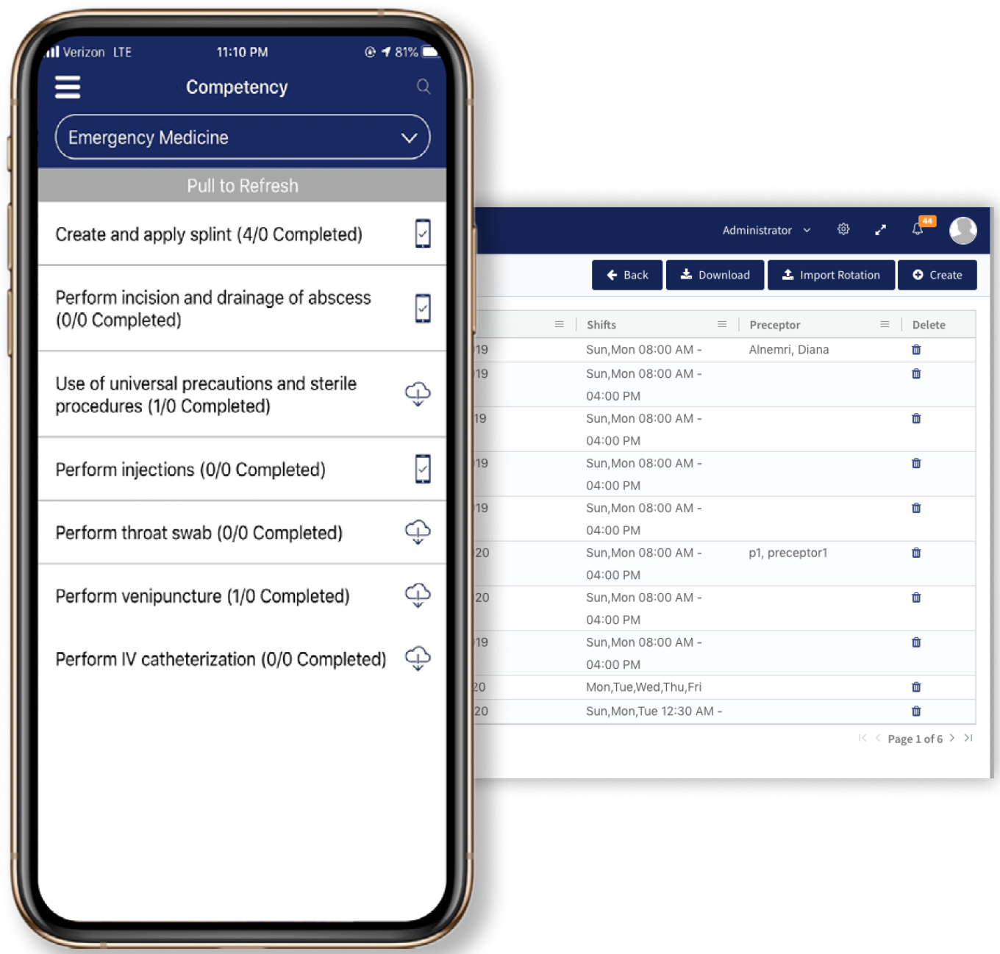
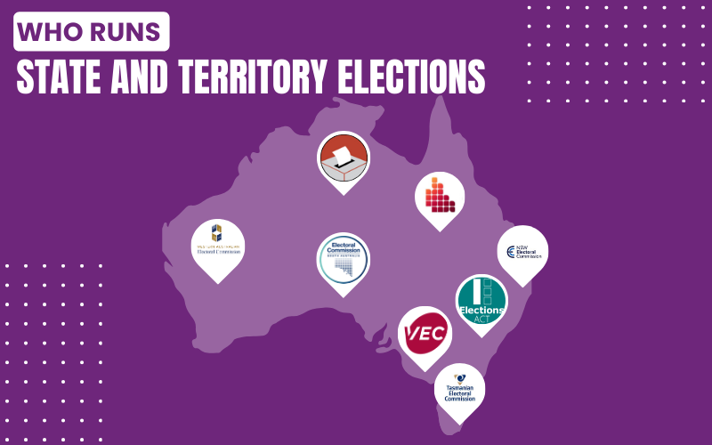
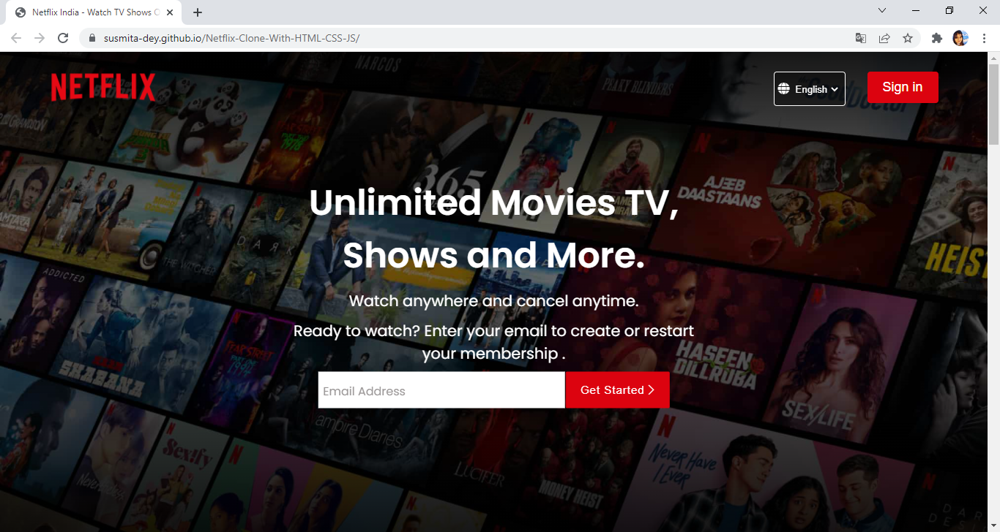
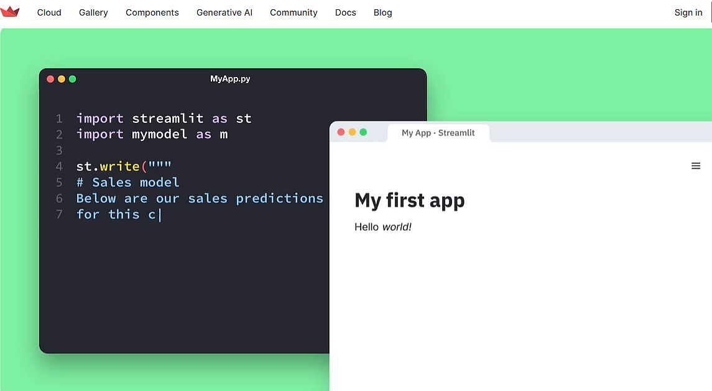

My Projects
Mr Bera's_Bot — Forex AI In Progress
An AI-powered Forex trading bot that analyses market data, identifies trading signals, and executes trades automatically. Features a full backtesting engine, moving-average crossover strategy, and risk management. Built with Python.

Forex Trading Journal In Progress
A full-stack forex trade journal and analytics dashboard built with Next.js and TypeScript. Logs trades by pair, session, and direction with real-time P&L stats, win rate, streak tracking, and an interactive equity curve chart.

Bera — E-Commerce Website In Progress
A full-featured e-commerce web application with product listings, shopping cart, user authentication, and payment integration. Designed with a modern UI/UX for a seamless online shopping experience across all devices.

Sentiment Analysis-Based Election Prediction System
A web-based application aimed at improving election forecasting through social media analysis. Analyzes anonymous comments, CSV data files, and social media data collected via the X API to provide precise election predictions.

Clinical Rotation Management Web App
Streamlines student clinical rotations with automated scheduling, attendance tracking, performance evaluation, and document management. Features real-time progress tracking and reporting tools.

Twitter-Driven Voting System
Empowers users to participate in voting processes through online communities, integrating advanced data analytics and sentiment analysis to provide insights into public opinion trends and preferences.

Netflix Clone (Work in Progress)
A Netflix-inspired clone featuring a responsive landing page and login page built using HTML, CSS, and JavaScript. Replicates the sleek Netflix UI with dynamic layouts, animations, and a user-friendly design.

Find My iPhone Web App
Web-based tracking application using Python, Streamlit, and Google Maps integration to fetch real-time location data via pyicloud_ipd and findmy libraries. Displays phone location, IMEI, and serial number on an interactive map.